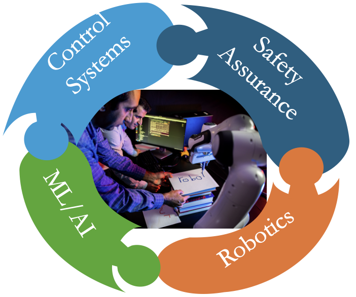

Mohammadreza Davoodi
 |
Assistant Professor Email: mdavoodi@memphis.edu |
About Me
I am an Assistant Professor with the Department of Electrical & Computer Engineering at the University of Memphis, where I lead the Autonomous & Complex Systems Laboratory.
Research Interests
|  |
|
Recent Highlights
News & Updates
June 2025: Giving a talk on Deploying Heterogeneous Multi-Robot Systems for Efficient Monitoring in Precision Agriculture at Gatech https://sites.gatech.edu/quad-ai-engage-workshop-2025/.
May 2025: I received the Outstanding Teaching Award from the Herff College of Engineering.
July 2024: Presenting our new findings on Multi-Event-Triggered Control with Reduced Packet Sizes for Quantized Discrete-Time Linear Systems at the American Control Conference.
July 2024: Co-chairing a session at the American Control Conference.
June 2023: Our lab was awarded a grant from the NSF through Columbia University to study the modeling and control of a network of soft actuators.